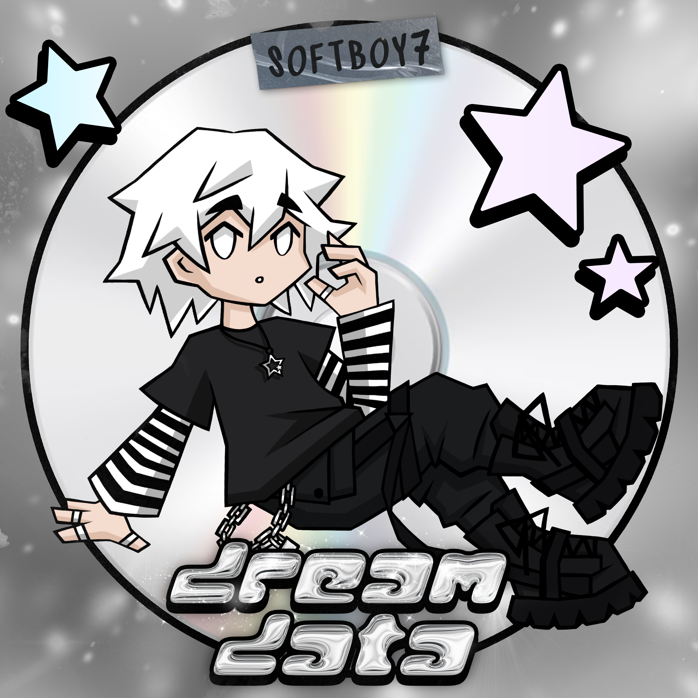
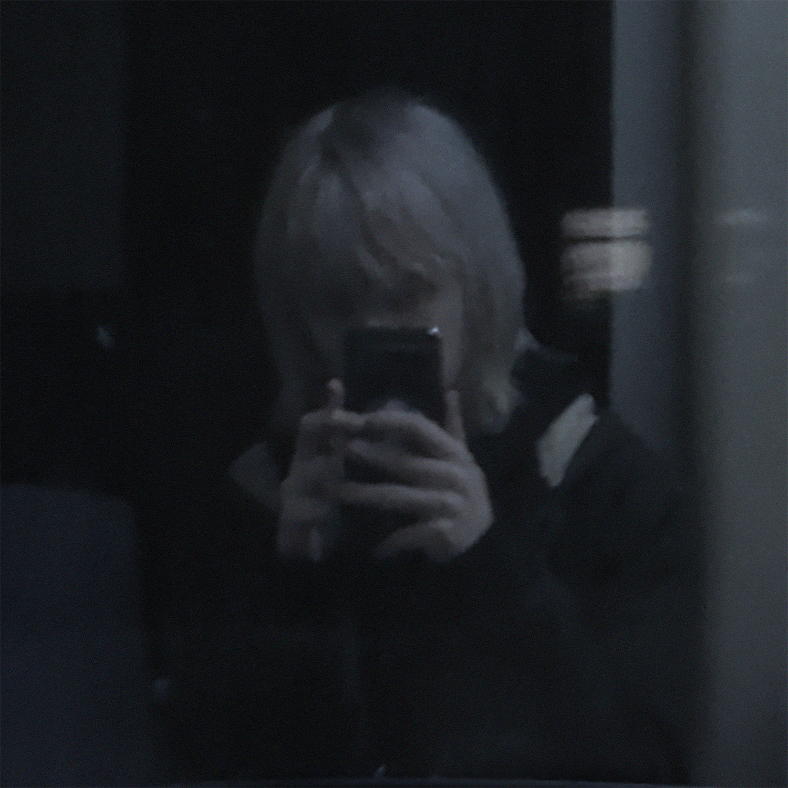
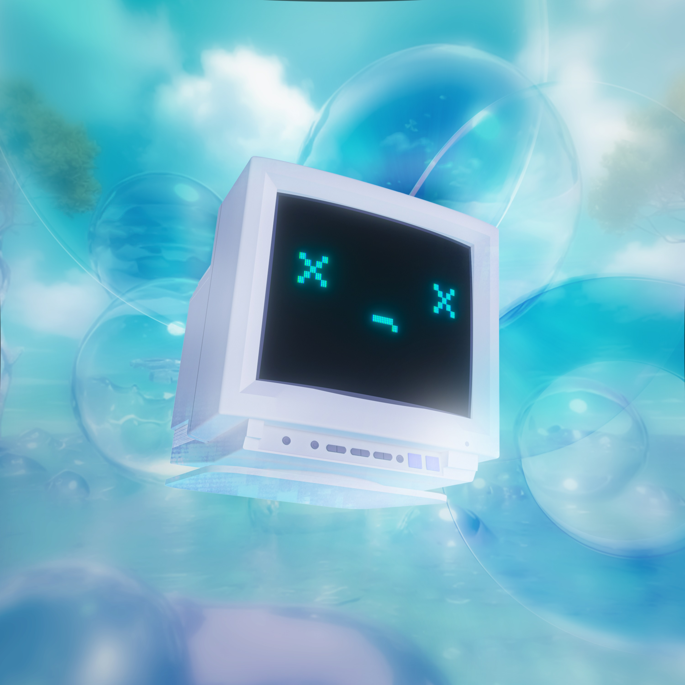

[ dreamData : lore ]
I worked on dreamData for 1.5 years, and it became a very personal project.
After struggling with my mental health for a long time, I fell in love with being alive again.
A big part of that healing came through online connections — calls, shared moments,
emotional conversations through text messages, gaming sessions, and late nights spent together online.

✦ ── ✧ ✦ ── ✧
The album explores how emotions (including romantic feelings) can be communicated digitally.
Tracks like my little angel, love letter,
dreamData, and flower forest
focus on intimacy and connection in online spaces, showing how real and meaningful these relationships can be.
✦ ── ✧ ✦ ── ✧
last promise focuses on embracing your unique personality.
While changing yourself to fit in can feel tempting, the song reminds outcasts that
true happiness comes from being accepted for who you are and recognizing the beauty
in your own individuality.
✦ ── ✧ ✦ ── ✧
Another important moment behind the album was trusting a stranger and flying to Brazil,
which turned into a very wholesome experience.
That feeling of comfort and vulnerability is reflected in take my hand.
✦ ── ✧ ✦ ── ✧
nightfall is about people who feel more confident, inspired,
and alive at night — a space where everything feels possible.

✦ ── ✧ ✦ ── ✧
above the layers is about a dreamy place above the clouds
that you can reach by finding inner peace. The track also connects to other tracks:
in the music video of dead pc, the line "see you above the layers" hints at it,
while "giving up" from "welcome to the void" refers to "layer 0", the lowest point of life.
✦ ── ✧ ✦ ── ✧

dead pc kinda has it's own storyline.
Many people know the feeling of losing photos, messages, or personal files forever
due to a broken phone or corrupted hard drive.
The track captures the sadness of that loss, while recognizing that even if the data is gone,
the memories connected to it continue to exist. An animated
music video
was created to visually explore this idea.
✦ ── ✧ ✦ ── ✧
final steps through the portal brings the listener back into reality,
after viewing the world through a more hopeful lens.
✦ ── ✧ ✦ ── ✧
Overall, dreamData is built from real-life experiences,
the reasons I fell in love with life again, and dream worlds inspired by
Y2K, Frutiger Aero, solarpunk, kawaii, and hopecore.